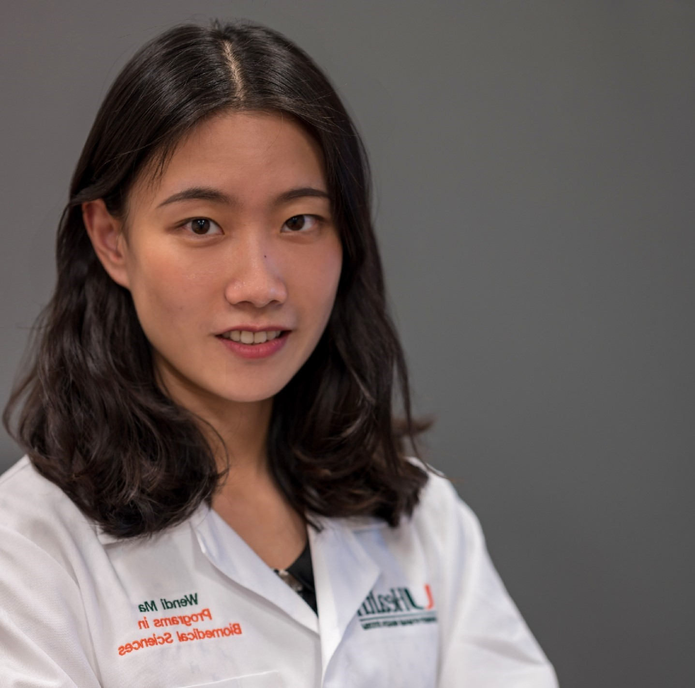

About
I am a translational scientist and Ph.D. candidate in Cancer Biology at the University of Miami, Miller School of Medicine, where I specialize in the intersection of oncology, nanotechnology, and clinical AI. With a technical foundation in Pharmacy and Clinical Pharmacology, I have dedicated my career to bridging the gap between complex laboratory research and actionable clinical therapies. My doctoral work at the Sylvester Comprehensive Cancer Center has been instrumental in the field of prostate cancer; notably, I generated the preclinical data on epigenetic drug mechanisms that secured a $677,364 Florida Cancer Innovation Fund.
Beyond the bench, I am a prolific scientific communicator and regulatory expert. I have first- or co-authored seven peer-reviewed publications in journals such as Frontiers in Immunology and the Journal of Neuroimmunology, and I have completed 27 peer reviews for the broader scientific community. Currently, as a Scientific Writing & Translational Research Intern at NEXI Biotech, I translate sophisticated experimental concepts into structured narratives for stakeholders, mapping disease biology to therapeutic mechanisms of action.
My expertise extends into the digital evolution of medicine. I have conducted in-depth research on AI applications in clinical trials, helping to automate complex datasets and enhance regulatory compliance. Certified in Good Clinical Practice and holding an AMWA certificate in Regulatory Writing, I combine rigorous data interpretation with a strategic understanding of the biopharmaceutical landscape. Whether I am engineering targeted nanoparticles or drafting high-level white papers, I remain committed to advancing precision medicine and improving patient outcomes through evidence-based innovation.
Program interests
- Data-science directions: Real-World Evidence Data Analytics, Computational Biology, Biostatics, Computational Chemistry, Systems Pharmacology, Text Mining and Natural Language Processing (NLP), Market Analysis and Forecasting, Clinical Trial Design and Analysis, Drug Repurposing Prediction
- Drug-development stage: 🧍 4. Clinical Development
- Programming level: Beginner
- Tools and platforms: GIMP(https://www.gimp.org/)